トイレについて

水洗トイレの使用禁止
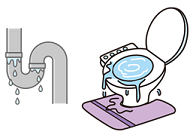 大規模な地震が発生した場合、水洗トイレは使用しないでください。 水道管が破損した場合、水漏れや、汚水の逆流などが発生する可能性があります。会社での簡易トイレ
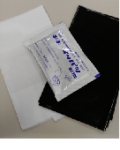 会社で水洗トイレが使用できない場合は、備蓄品の簡易トイレを使用します。 この場合、自衛消防隊が簡易トイレのセッティングを行います。 セッティングが完了したトイレから順次、簡易トイレセットを使用して、トイレを利用できます。 ＜自衛消防隊によるセッティング＞ 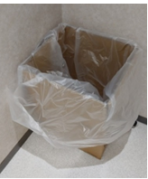回収袋設置 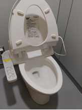便座を上げ 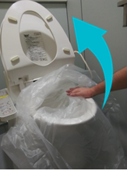下地袋を被せる 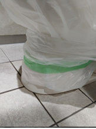足元をテープ止め 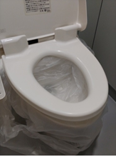中央を窪ませる ＜簡易トイレの使用＞ セッティング済を確認 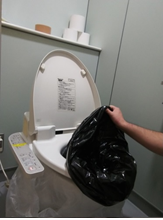汚物収納袋を被せる 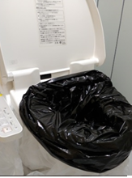この状態で使用 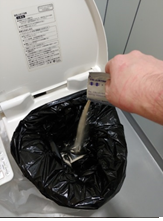使用後、汚物処理剤を投入 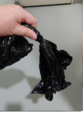汚物収納袋をしっかり縛って捨てる ＜注意事項＞ ・水を流さない(手洗いはウェットシートで) ・和式トイレ/小便器には使用しない ・ウォシュレットは使用しない ・立小便しない(便座に座ってする)